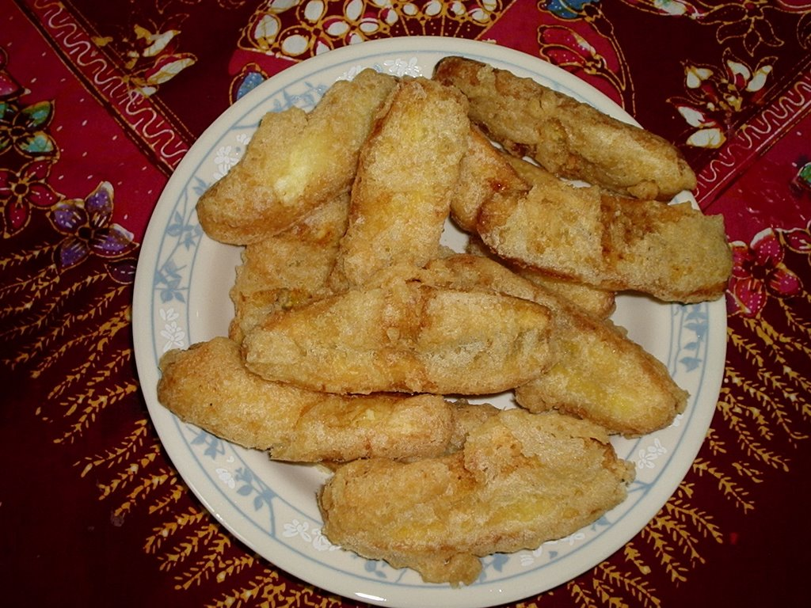

Pisang Goreng Recipe

Description
Pisang goreng is an indonesian snack that is made by fying bananas
that has been peeled and covered in batter in hot oil. This food
is very common in Southeast Asia (including Indonesia) and South India.
Ingredients
- Banana
- All purpose Flour
- Rice flour
- Sugar
- Salt
- Water
- Oil
Steps
- Peel the bananas.
- Mix all purpose flour, rice flour, sugar, and salt.
-
Add water little by little until the mixture achieves the right
consistency. Not too watery and sticky.
- Pour the oil into the pan.
- Heat the oil with medium fire.
- Dip the banana into the batter.
- Fry the banana until golden brown.
- Remove from the pan and serve.
Home